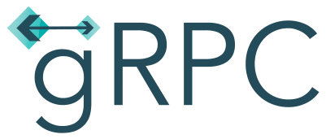
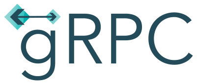

I am an undergraduate senior student at the
University of North Carolina at Chapel Hill, majoring in
Computer Science
and
Mathematics.
Experience and Projects
In summer 2023, I worked as a software engineering intern at Belvedere
Trading.
Since Feb 2023, I am working on 3D body pose reconstruction at UNC
Graphics & Virtual Reality Group, advised by
Prof. Henry Fuchs.
Since Feb 2022, I am working as a research assistant with
Prof. Prasun Dewan. The group is working on a project that generates programming hints
for students when they are working on a programming assignment, using
data-driven approaches. I am working on analyzing data from past
programming assignments by constructing an Abstract Syntax Tree timeline
and clustering students' code.
I am also working as a undergraduate teaching assistant for the course
Files and Databases (COMP 421), an upper-level elective course focused
on teaching SQL and relational database concepts.
In fall 2021, I was an undergraduate teaching assistant for Systems
Fundamentals (COMP 211), an intermediate course in the Department of
Computer Science. The course focused on C programming, low-level system
concepts, cache and memory management, and MIPS instructions. I assisted
a cohort of 15 students through daily office hours and graded students'
lab assignments.
In winter 2020-2021, I interned at Yunphant Blockchain, a company
providing Blockchain as a Service solutions. I worked on chaincode
editor, a tools that allows developers to write and test chaincode
programs (the programs that runs on blockchain). I also ported the
improved chaincode lifecycle to company's proprietary Yunphant Chain
management system.
I use a variety of languages and tools in many different projects. I use
Go for most of my containerized projects, and use Python for many small
scripting work and API jobs. I am getting started with Rust for some
mission critical services.
Here is the languages and tools I have experience in:


 Basic:
Basic:


 Tools:
Strong:
Tools:
Strong:


 Basic:
Basic:

 
